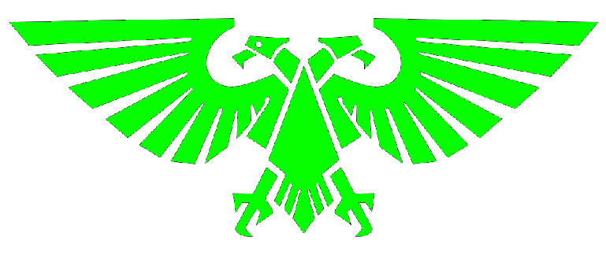

|Portfolio Léo Linux|Prières|
|Portfolio Léo Linux|Prières|
----------------------------------------------
╔══════════════════════════════╗ ║ PRIÈRES ║ ╚══════════════════════════════╝
╔══════════════════════════════╗ ║ LITANIE DE PROTECTION ║ ╚══════════════════════════════╝ De la faim et de la soif, le Dieu Machine nous protège Du froid, du feu et du vide, le Dieu Machine nous protège Des horreurs de la désolation, le Dieu Machine nous protège Du cauchemar de l'ignorance, le Dieu Machine nous protège Des déchets radioactifs, le Dieu Machine nous protège Des dangers du Warp, le Dieu Machine nous protège Vêtus de fer, purs de pensée et d’âme, nous allons endurer cette terrible nuit. — Première prière, premier livre, première bibliothèque du grand disque omnissien datant de la fondation du Mechanicus
╔══════════════════════════════╗ ║SUPPLICATION DE PURIFICATION ║ ╚══════════════════════════════╝ De la faiblesse de l’esprit, Omnimessie sauve-nous Des mensonges de la haine, Circuit préserve-nous De la rage de la bête, Fer protège-nous Des tentations de la chair, Silice lave-nous Des ravages du destructeur, Âme défend-nous De cette cage de bio-matière, Dieu Machine libère-nous — Les chants du compagnon, verset III / w-k-03
╔══════════════════════════════╗ ║LOUANGES À L’OMNIMESSIE ║ ╚══════════════════════════════╝ Omniscient Omnimessie, éloigne-nous de l'ignorance Invincible Omnimessie, protège-nous de l'erreur Infaillible Omnimessie, bénis-nous de ton savoir Combatif Omnimessie, détruis nos ennemis Bienveillant Omnimessie, guide nos actions Tout-Puissant Omnimessie, garde-nous pendant la bataille Immortel Omnimessie, pour ta souffrance, nous expions Éternel Omnimessie, puisses-tu toujours faire perdurer le Trône d'Or
╔══════════════════════════════╗ ║HYMNES DE RÉVÉRENCE ║ ╚══════════════════════════════╝ Révère l'Omnimessie, car ses œuvres nous ont élevés de la sauvagerie Révère l'Omnimessie, car ses enfants servent l'humanité Révère l'Omnimessie, dont les pistolets tueront l’alien Révère l'Omnimessie, dont les navires vaincront le vide Révère l'Omnimessie, notre foi nous protégera du chaos Révère l'Omnimessie, notre labeur armera ses légions Révère l'Omnimessie, le phare contre la ruine de l’Homme Révère l'Omnimessie, de la naissance au tombeau
╔══════════════════════════════╗ ║EXPIATION DES DIAGNOSTICS ║ ╚══════════════════════════════╝ Saint Omnimessie, écoutez ma prière et expliquez-moi les défauts de ma forme. Voyez à travers mes yeux, de globes et de lentilles, et dites-moi si ma vue est libre de fantômes Écoutez par mes oreilles, de membranes et de micros, et dites-moi s'ils murmurent des mensonges Atteignez par mes membres, de chaînes et de moteurs, et dites-moi s'ils attrapent les morts Souvenez-vous par mon esprit, de neurones et de silice, et dites-moi si mes pensées sont distraites Ressentez à travers mon cœur, de muscles et de pistons, et parlez-moi du fardeau de l'émotion Connaissez-moi à travers mon âme, de l'éther et de la force motrice, et jugez-moi comme votre serviteur Où je me suis égaré, puis-je être corrigé Où je marche vrai, puis-je être encouragé Puis-je mieux exécuter votre Grand Dessein par vos conseils ici. Ave Omnimessie
╔══════════════════════════════╗ ║BÉNÉDICTION DE L’OMNISCIENCE ║ ╚══════════════════════════════╝ Saint Omnimessie, dont l'esprit sait tout et le regard voit tout. Dont les desseins englobent tout ce qui est et sera jamais. Envoyez sur nous la connaissance de ce qui est à venir. Guidez nos esprits dans les vastes calculs de ce qui va arriver. Dieu Machine, montrez-nous le chemin à travers les ténèbres de la confusion. Illuminez-nous par la force motrice qui palpite dans toutes vos constructions bénies. Que rien n'échappe à notre vue ! Grand créateur, Dieu de la machine, dont le grand dessein englobe toutes choses. Qui a donné l'étincelle de la vie aux créatures de chair, de métal et aux créatures des deux imbriquées. Dont les champions font trembler la terre et à qui rien ne résiste. Accordez-moi les conseils pour exécuter mon rôle dans votre grand dessein. Puisse le calcul divin être partiellement attribué à ma forme autrement indigne, afin que je puisse mieux vous servir aujourd'hui. Puisse-je découvrir une grande connaissance. Puisse-je faire tomber de grands blasphèmes. Puisse-je honorer la forge de mon temple et les bénédictions de fer qu'ils m'ont accordées. Que je vous honore, Dieu de la machine, dans tout ce que je fais et dans tout ce que je suis, aujourd'hui et tous les jours. Ave Omnimessie Ave Deus Mechanicus
╔══════════════════════════════╗ ║MANTRA DE FOCALISATION DIVINE ║ ╚══════════════════════════════╝ Du Dieu Machine vient la force motrice De la force motrice vient la vie Dans la vie je poursuis la connaissance La connaissance est un acte de foi De la foi je puise la force Avec force ma volonté est faite Par ma volonté mon esprit est ordonné Pour que la paix soit trouvée Dans la paix est mon but Mon but est de servir le Dieu Machine Qu'il bénisse mon esprit avec calme
---------------------------------------
_[Transmission complete. May your circuits remain blessed.]_
> logout
Session closed.
---------------------------------------

_Loué soit le Saint Empereur-Dieu de l'Humanité_